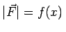
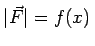
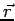

Inhalt Index DeskTop Bronstein

 Integralrechnung Bestimmte Integrale Anwendungen bestimmter Integrale Anwendungen in Mechanik und Physik
Integralrechnung Bestimmte Integrale Anwendungen bestimmter Integrale Anwendungen in Mechanik und Physik


Die Arbeit bei Bewegung eines Körpers in einem Kraftfeld ist infolge des eingehenden Skalarproduktes richtungsabhängig. Sind Kraft- und Bewegungsrichtung konstant und fallen beide zusammen, dann kann die x-Achse in die Kraft- bzw. Bewegungsrichtung gelegt werden. Ist der Betrag der Kraft  veränderlich, d.h. gilt , dann erhält man für die Arbeit , die zur Verschiebung eines Körpers längs der x-Achse vom Punkt x=a zum Punkt x=b notwendig ist:
veränderlich, d.h. gilt , dann erhält man für die Arbeit , die zur Verschiebung eines Körpers längs der x-Achse vom Punkt x=a zum Punkt x=b notwendig ist:
Im allgemeinen Fall, wenn Kraft- und Bewegungsrichtung nicht übeinstimmen, wird die Arbeit als Kurvenintegral über das Skalarprodukt aus Kraft und Weg in jedem Punkt  längs des vorgegebenen Weges berechnet.